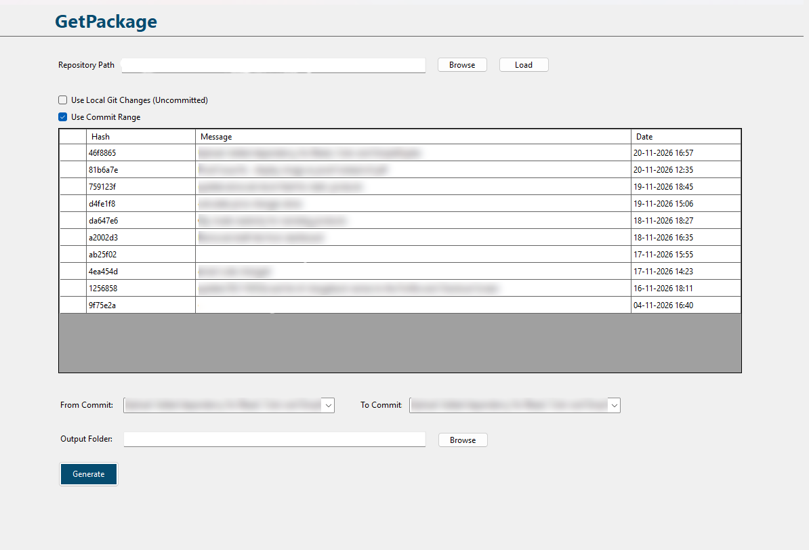

Work tool · .NET
GetPackage
A .NET desktop utility that automates deployment package creation for .NET Web Forms applications, straight from your Git history.
4simple steps
2ways to pick commits

What it does.
Automates packaging
Builds deployment packages for .NET Web Forms applications without collecting files by hand.
Reads Git metadata
Finds the files that were modified and arranges them into a structured package for production releases.
Fewer release mistakes
Cuts manual effort, keeps deployments consistent and reduces release-related errors.
- .NET
- C#
- Git
How to use it.
Pick a step to see where to click. The commit messages in these screenshots are blurred.
